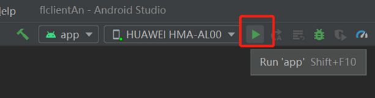

Implementing a Sentiment Classification Application (Android)¶

Through the federated learning modeling approach of cross-device collaboration, the advantages of device-side data can be fully utilized to avoid uploading sensitive user data directly to the cloud side. Since users attach great importance to the privacy of the text they input when using input methods, and the intelligent functions of input methods are important to improve user experience. Therefore, federated learning is naturally applicable to the input method application scenarios.
MindSpore Federated has applied the Federated Language Model to the emoji image prediction feature of the input method. The Federated Language Model recommends emoji images that are appropriate for the current context based on chat text data. When modeling with federated learning, each emoji image is defined as a sentiment label category, and each chat phrase corresponds to an emoji image. MindSpore Federated defines the emoji image prediction task as a federated sentiment classification task.
Preparations¶
Environment¶
For details, see Server Environment Configuration and Client Environment Configuration.
Data¶
The training data contains 20 user chat files. The directory structure is as follows:
mobile/datasets/train/
├── 0.tsv # Training data of user 0
├── 1.tsv # Training data of user 1
│
│ ......
│
└── 19.tsv # Training data of user 19
The validation data contains one chat file. The directory structure is as follows:
datasets/supervise/eval/
└── eval.txt # Validation data
The labels in the training data and validation data correspond to four types of emojis: good, leimu, xiaoku, xin.
Defining the Network¶
The ALBERT language model[1] is used in federated learning. The ALBERT model on the client includes the embedding layer, encoder layer, and classifier layer.
For details about the network definition, see source code.
Generating a Device-Side Model File¶
User can generate a Device-Side Model File as follow, or download the generated ALBERT Device-Side Model File。
Exporting a Model as a MindIR File¶
The sample code is as follows:
import argparse
import os
import random
from time import time
import numpy as np
import mindspore as ms
from mindspore.nn import AdamWeightDecay
from src.config import train_cfg, client_net_cfg
from src.utils import restore_params
from src.model import AlbertModelCLS
from src.cell_wrapper import NetworkWithCLSLoss, NetworkTrainCell
def parse_args():
"""
parse args
"""
parser = argparse.ArgumentParser(description='export task')
parser.add_argument('--device_target', type=str, default='GPU', choices=['Ascend', 'GPU'])
parser.add_argument('--device_id', type=str, default='0')
parser.add_argument('--init_model_path', type=str, default='none')
parser.add_argument('--output_dir', type=str, default='./models/mindir/')
parser.add_argument('--seed', type=int, default=0)
return parser.parse_args()
def supervise_export(args_opt):
ms.set_seed(args_opt.seed), random.seed(args_opt.seed)
start = time()
# Parameter configuration
os.environ['CUDA_VISIBLE_DEVICES'] = args_opt.device_id
init_model_path = args_opt.init_model_path
output_dir = args_opt.output_dir
if not os.path.exists(output_dir):
os.makedirs(output_dir)
print('Parameters setting is done! Time cost: {}'.format(time() - start))
start = time()
# MindSpore configuration
ms.set_context(mode=ms.GRAPH_MODE, device_target=args_opt.device_target)
print('Context setting is done! Time cost: {}'.format(time() - start))
start = time()
# Build mode
albert_model_cls = AlbertModelCLS(client_net_cfg)
network_with_cls_loss = NetworkWithCLSLoss(albert_model_cls)
network_with_cls_loss.set_train(True)
print('Model construction is done! Time cost: {}'.format(time() - start))
start = time()
# Build optimizer
client_params = [_ for _ in network_with_cls_loss.trainable_params()]
client_decay_params = list(
filter(train_cfg.optimizer_cfg.AdamWeightDecay.decay_filter, client_params)
)
client_other_params = list(
filter(lambda x: not train_cfg.optimizer_cfg.AdamWeightDecay.decay_filter(x), client_params)
)
client_group_params = [
{'params': client_decay_params, 'weight_decay': train_cfg.optimizer_cfg.AdamWeightDecay.weight_decay},
{'params': client_other_params, 'weight_decay': 0.0},
{'order_params': client_params}
]
client_optimizer = AdamWeightDecay(client_group_params,
learning_rate=train_cfg.client_cfg.learning_rate,
eps=train_cfg.optimizer_cfg.AdamWeightDecay.eps)
client_network_train_cell = NetworkTrainCell(network_with_cls_loss, optimizer=client_optimizer)
print('Optimizer construction is done! Time cost: {}'.format(time() - start))
start = time()
# Construct data
input_ids = ms.Tensor(np.zeros((train_cfg.batch_size, client_net_cfg.seq_length), np.int32))
attention_mask = ms.Tensor(np.zeros((train_cfg.batch_size, client_net_cfg.seq_length), np.int32))
token_type_ids = ms.Tensor(np.zeros((train_cfg.batch_size, client_net_cfg.seq_length), np.int32))
label_ids = ms.Tensor(np.zeros((train_cfg.batch_size,), np.int32))
print('Client data loading is done! Time cost: {}'.format(time() - start))
start = time()
# Read checkpoint
if init_model_path != 'none':
init_param_dict = ms.load_checkpoint(init_model_path)
restore_params(client_network_train_cell, init_param_dict)
print('Checkpoint loading is done! Time cost: {}'.format(time() - start))
start = time()
# Export
ms.export(client_network_train_cell, input_ids, attention_mask, token_type_ids, label_ids,
file_name=os.path.join(output_dir, 'albert_supervise'), file_format='MINDIR')
print('Supervise model export process is done! Time cost: {}'.format(time() - start))
if __name__ == '__main__':
total_time_start = time()
args = parse_args()
supervise_export(args)
print('All is done! Time cost: {}'.format(time() - total_time_start))
Converting the MindIR File into an MS File that Can be Used by the Federated Learning Framework on the Device¶
For details about how to generate a model file on the device, see Implementing an Image Classification Application.
Starting the Federated Learning Process¶
Start the script on the server. For details, see Cloud-based Deployment
Based on the training and inference tasks of the ALBERT model, the overall process is as follows:
Create an Android project.
Build the MindSpore Lite AAR package.
Describe the Android instance program structure.
Write code.
Configure Android project dependencies.
Build and run on Android.
Creating an Android Project¶
Create a project in Android Studio and install the corresponding SDK. (After the SDK version is specified, Android Studio automatically installs the SDK.)

Android Instance Program Structure¶
app
│ ├── libs # Binary archive file of the Android library project
| | └── mindspore-lite-full-{version}.aar # MindSpore Lite archive file of the Android version
├── src/main
│ ├── assets # Resource directory
| | └── model # Model directory
| | └── albert_ad_train.mindir.ms # Pre-trained model file
│ | └── albert_ad_infer.mindir.ms # Inference model file
│ | └── data # Data directory
| | └── 0.txt # training data file
| | └── vocab.txt # Dictionary file
| | └── vocab_map_ids.txt # Dictionary ID mapping file
| | └── eval.txt # Training result evaluation file
| | └── eval_no_label.txt # Inference data file
│ |
│ ├── java # Application code at the Java layer
│ │ └── ... Storing Android code files. Related directories can be customized.
│ │
│ ├── res # Resource files related to Android
│ └── AndroidManifest.xml # Android configuration file
│
│
├── build.gradle # Android project build file
├── download.gradle # Downloading the project dependency files
└── ...
Writing Code¶
AssetCopyer.java: This code file is used to store the resource files in the app/src/main/assets directory of the Android project to the disk of the Android system. In this way, the federated learning framework API can read the resource files based on the absolute path during model training and inference.
import android.content.Context; import java.io.File; import java.io.FileOutputStream; import java.io.InputStream; import java.util.logging.Logger; public class AssetCopyer { private static final Logger LOGGER = Logger.getLogger(AssetCopyer.class.toString()); public static void copyAllAssets(Context context,String destination) { LOGGER.info("destination: " + destination); copyAssetsToDst(context,"",destination); } // Copy the resource files in the assets directory to the disk of the Android system. You can view the specific path by printing destination. private static void copyAssetsToDst(Context context,String srcPath, String dstPath) { try { // Recursively obtain all file names in the assets directory. String[] fileNames =context.getAssets().list(srcPath); if (fileNames.length > 0) { // Build the destination file object. File file = new File(dstPath); // Create a destination directory. file.mkdirs(); for (String fileName : fileNames) { // Copy the file to the specified disk. if(!srcPath.equals("")) { copyAssetsToDst(context,srcPath + "/" + fileName,dstPath+"/"+fileName); }else{ copyAssetsToDst(context, fileName,dstPath+"/"+fileName); } } } else { // Build the input stream of the source file. InputStream is = context.getAssets().open(srcPath); // Build the output stream of the destination file. FileOutputStream fos = new FileOutputStream(new File(dstPath)); // Define a 1024-byte buffer array. byte[] buffer = new byte[1024]; int byteCount=0; // Write the source file to the destination file. while((byteCount=is.read(buffer))!=-1) { fos.write(buffer, 0, byteCount); } // Refresh the output stream. fos.flush(); // Close the input stream. is.close(); // Close the output stream. fos.close(); } } catch (Exception e) { e.printStackTrace(); } } }
FlJob.java: This code file is used to define training and inference tasks. For details about federated learning APIs, see federated Learning APIs.
import android.annotation.SuppressLint; import android.os.Build; import androidx.annotation.RequiresApi; import com.mindspore.flAndroid.utils.AssetCopyer; import com.mindspore.flclient.FLParameter; import com.mindspore.flclient.SyncFLJob; import java.util.Arrays; import java.util.UUID; import java.util.logging.Logger; public class FlJob { private static final Logger LOGGER = Logger.getLogger(AssetCopyer.class.toString()); private final String parentPath; public FlJob(String parentPath) { this.parentPath = parentPath; } // Android federated learning training task @SuppressLint("NewApi") @RequiresApi(api = Build.VERSION_CODES.M) public void syncJobTrain() { // create dataMap String trainTxtPath = "data/albert/supervise/client/1.txt"; String evalTxtPath = "data/albert/supervise/eval/eval.txt"; // Not necessary, if you don't need verify model accuracy after getModel, you don't need to set this parameter String vocabFile = "data/albert/supervise/vocab.txt"; // Path of the dictionary file for data preprocessing. String idsFile = "data/albert/supervise/vocab_map_ids.txt" // Path of the mapping ID file of a dictionary. Map<RunType, List<String>> dataMap = new HashMap<>(); List<String> trainPath = new ArrayList<>(); trainPath.add(trainTxtPath); trainPath.add(vocabFile); trainPath.add(idsFile); List<String> evalPath = new ArrayList<>(); // Not necessary, if you don't need verify model accuracy after getModel, you don't need to set this parameter evalPath.add(evalTxtPath); // Not necessary, if you don't need verify model accuracy after getModel, you don't need to set this parameter evalPath.add(vocabFile); // Not necessary, if you don't need verify model accuracy after getModel, you don't need to set this parameter evalPath.add(idsFile); // Not necessary, if you don't need verify model accuracy after getModel, you don't need to set this parameter dataMap.put(RunType.TRAINMODE, trainPath); dataMap.put(RunType.EVALMODE, evalPath); // Not necessary, if you don't need verify model accuracy after getModel, you don't need to set this parameter String flName = "com.mindspore.flclient.demo.albert.AlbertClient"; // The package path of AlBertClient.java String trainModelPath = "ms/albert/train/albert_ad_train.mindir0.ms"; // Absolute path String inferModelPath = "ms/albert/train/albert_ad_train.mindir0.ms"; // Absolute path, consistent with trainModelPath String sslProtocol = "TLSv1.2"; String deployEnv = "android"; // The url for device-cloud communication. Ensure that the Android device can access the server. Otherwise, the message "connection failed" is displayed. String domainName = "http://10.113.216.106:6668"; boolean ifUseElb = true; int serverNum = 4; int threadNum = 4; BindMode cpuBindMode = BindMode.NOT_BINDING_CORE; int batchSize = 32; FLParameter flParameter = FLParameter.getInstance(); flParameter.setFlName(flName); flParameter.setDataMap(dataMap); flParameter.setTrainModelPath(trainModelPath); flParameter.setInferModelPath(inferModelPath); flParameter.setSslProtocol(sslProtocol); flParameter.setDeployEnv(deployEnv); flParameter.setDomainName(domainName); flParameter.setUseElb(ifUseElb); flParameter.setServerNum(serverNum); flParameter.setThreadNum(threadNum); flParameter.setCpuBindMode(BindMode.valueOf(cpuBindMode)); // start FLJob SyncFLJob syncFLJob = new SyncFLJob(); syncFLJob.flJobRun(); } // Android federated learning inference task public void syncJobPredict() { // create dataMap String inferTxtPath = "data/albert/supervise/eval/eval.txt"; String vocabFile = "data/albert/supervise/vocab.txt"; String idsFile = "data/albert/supervise/vocab_map_ids.txt"; Map<RunType, List<String>> dataMap = new HashMap<>(); List<String> inferPath = new ArrayList<>(); inferPath.add(inferTxtPath); inferPath.add(vocabFile); inferPath.add(idsFile); dataMap.put(RunType.INFERMODE, inferPath); String flName = "com.mindspore.flclient.demo.albert.AlbertClient"; // The package path of AlBertClient.java String inferModelPath = "ms/albert/train/albert_ad_train.mindir0.ms"; // Absolute path, consistent with trainModelPath int threadNum = 4; BindMode cpuBindMode = BindMode.NOT_BINDING_CORE; int batchSize = 32; FLParameter flParameter = FLParameter.getInstance(); flParameter.setFlName(flName); flParameter.setDataMap(dataMap); flParameter.setInferModelPath(inferModelPath); flParameter.setThreadNum(threadNum); flParameter.setCpuBindMode(cpuBindMode); flParameter.setBatchSize(batchSize); // inference SyncFLJob syncFLJob = new SyncFLJob(); int[] labels = syncFLJob.modelInference(); LOGGER.info("labels = " + Arrays.toString(labels)); } }
The above eval_no_label.txt refers to a file where no label exists, with one statement per line. The format reference is as follows, which the user is free to set:
愿以吾辈之青春 护卫这盛世之中华🇨🇳 girls help girls 太美了，祝祖国繁荣昌盛！ 中国人民站起来了 难道就我一个人觉得这个是plus版本？ 被安利到啦！明天起来就看！早点睡觉莲莲
MainActivity.java: This code file is used to start federated learning training and inference tasks.
import android.os.Build; import android.os.Bundle; import androidx.annotation.RequiresApi; import androidx.appcompat.app.AppCompatActivity; import com.huawei.flAndroid.job.FlJob; import com.huawei.flAndroid.utils.AssetCopyer; @RequiresApi(api = Build.VERSION_CODES.P) public class MainActivity extends AppCompatActivity { private String parentPath; @Override protected void onCreate(Bundle savedInstanceState) { super.onCreate(savedInstanceState); // Obtain the disk path of the application in the Android system. this.parentPath = this.getExternalFilesDir(null).getAbsolutePath(); // Copy the resource files in the assets directory to the disk of the Android system. AssetCopyer.copyAllAssets(this.getApplicationContext(), parentPath); // Create a thread and start the federated learning training and inference tasks. new Thread(() -> { FlJob flJob = new FlJob(parentPath); flJob.syncJobTrain(); flJob.syncJobPredict(); }).start(); } }
Configuring Android Project Dependencies¶
AndroidManifest.xml
<?xml version="1.0" encoding="utf-8"?> <manifest xmlns:android="http://schemas.android.com/apk/res/android" package="com.huawei.flAndroid"> <!-- Allow network access.--> <uses-permission android:name="android.permission.INTERNET" /> <application android:allowBackup="true" android:supportsRtl="true" android:usesCleartextTraffic="true" android:theme="@style/Theme.Flclient"> <!--Customize the location of the MainActivity file.--> <activity android:name="com.huawei.flAndroid.activity.MainActivity"> <intent-filter> <action android:name="android.intent.action.MAIN" /> <category android:name="android.intent.category.LAUNCHER" /> </intent-filter> </activity> </application> </manifest>
app/build.gradle
plugins { id 'com.android.application' } android { // Android SDK build version. It is recommended that the version be later than 27. compileSdkVersion 30 buildToolsVersion "30.0.3" defaultConfig { applicationId "com.huawei.flAndroid" minSdkVersion 27 targetSdkVersion 30 versionCode 1 versionName "1.0" multiDexEnabled true testInstrumentationRunner "androidx.test.runner.AndroidJUnitRunner" ndk { // Different mobile phone models correspond to different NDKs. Mate 20 corresponds to 'armeabi-v7a'. abiFilters 'armeabi-v7a' } } // Specified NDK version ndkVersion '21.3.6528147' sourceSets{ main { // Specified JNI directory jniLibs.srcDirs = ['libs'] jni.srcDirs = [] } } compileOptions { sourceCompatibility JavaVersion.VERSION_1_8 targetCompatibility JavaVersion.VERSION_1_8 } } dependencies { // AAR package to be scanned in the libs directory implementation fileTree(dir:'libs',include:['*.aar']) implementation 'androidx.appcompat:appcompat:1.1.0' implementation 'com.google.android.material:material:1.1.0' implementation 'androidx.constraintlayout:constraintlayout:1.1.3' androidTestImplementation 'androidx.test.ext:junit:1.1.1' androidTestImplementation 'androidx.test.espresso:espresso-core:3.2.0' implementation 'com.android.support:multidex:1.0.3' // Add third-party open source software that federated learning relies on implementation group: 'com.squareup.okhttp3', name: 'okhttp', version: '3.14.9' implementation group: 'com.google.flatbuffers', name: 'flatbuffers-java', version: '2.0.0' implementation(group: 'org.bouncycastle',name: 'bcprov-jdk15on', version: '1.68') }
Building and Running on Android¶
Connect to the Android device and run federated learning training and inference applications. Connect to the Android device through a USB cable for debugging. Click
Run 'app'to run the federated learning task on your device.
For details about how to connect the Android Studio to a device for debugging, see https://developer.android.com/studio/run/device. Android Studio can identify the mobile phone only when USB debugging mode is enabled on the mobile phone. For Huawei phones, enable USB debugging mode by choosing Settings > System & updates > Developer options > USB debugging.
Continue the installation on the Android device. After the installation is complete, you can start the app to train and infer the ALBERT model for federated learning.
The program running result is as follows:
I/SyncFLJob: <FLClient> [model inference] inference finish I/SyncFLJob: labels = [2, 0, 0, 0, 0, 1, 1, 1, 1, 2, 2, 2, 2, 4, 4, 4, 4]
Results¶
The total number of federated learning iterations is 10, the number of client-side local training epochs is 1, and the batchSize is set to 16.
<FLClient> total acc:0.44488978
<FLClient> total acc:0.583166333
<FLClient> total acc:0.609218437
<FLClient> total acc:0.645290581
<FLClient> total acc:0.667334669
<FLClient> total acc:0.685370741
<FLClient> total acc:0.70741483
<FLClient> total acc:0.711422846
<FLClient> total acc:0.719438878
<FLClient> total acc:0.733466934
References¶
[1] Lan Z, Chen M , Goodman S, et al. ALBERT: A Lite BERT for Self-supervised Learning of Language Representations[J]. 2019.